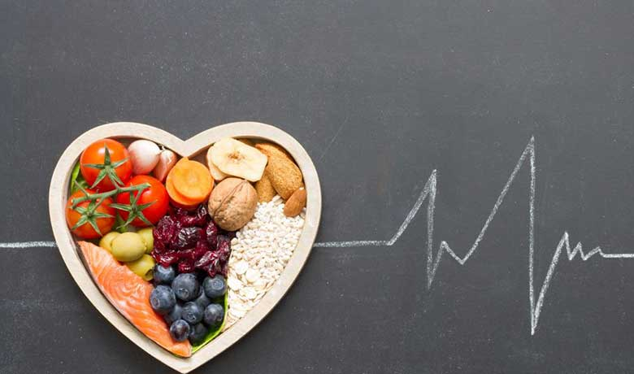

Covid managment at Home
The majority of people who are infected with coronavirus experience a mild or asymptomatic disease which can be treated at home.
Symptoms:
So if you're experiencing the telltale signs of the virus,here are the few measures and precautions you can take to win covid at home
Few Home care measures are :
• Isolation
• Diet and nutrition
• Yoga
• Basic Medication
• Basic diagonistic
• Self imposed lockdown
• Vaccination
• Maintaing proper hygiene
Few useful instruments for checking symptoms are:

What It’s Like to Have a ‘Mild’ Case of COVID-19 ❔❕
A majority of people with COVID-19 are expected to have relatively “mild” symptoms that resolve at home.Here are few precautionary measures one with mild symptoms should undergo at home:
(Ⅰ) Testing:
....
Testing of all people for SARS-CoV-2, including those who have no symptoms, who show symptoms of infection such as trouble breathing,fever, sore throat or loss of the sense of smell and taste, and who may have been exposed to the virus will help prevent the spread of COVID-19 by identifying people who are in need of care in a timely fashion.
A positive test early in the course of the illness enables individuals to isolate themselves – reducing the chances that they will infect others and allowing them to seek treatment earlier, likely reducing disease severity and the risk of long-term disability, or death.
(Ⅱ) Basic medication
....•Paracetemol
•Tab Vitamin C
•Uprise D3 60000 (Vitamin D)
•Budesonide(inhalor)
(Ⅲ) Basic Diagnostic tests
....•RTPCR For more about RTPCR test
•Haemogram For more about Haemogram test
•D Dimer For more about D Dimer test
•HRCT For more about HRCT test
(Ⅳ) Isolation
....Isolation, unlike quarantine, is when a person confirmed to have a contagious disease has to separate themselves from healthy individuals around them. This is done to prevent the spread of infection among the common masses.

(Ⅴ) Diet and Nutrition
....Good nutrition is crucial for health, particularly in times when the immune system might need to fight back. Limited access to fresh foods may compromise opportunities to continue eating a healthy and varied diet. It can also potentially lead to an increased consumption of highly processed foods, which tend to be high in fats, sugars and salt. Nonetheless, even with few and limited ingredients, one can continue eating a diet that supports good health.
(Ⅵ) Yoga
....Breathing exersices ,pranayma and surya namaskara can enhance the capability to face covid-19
(Ⅶ) Hospitalisation
.... Do not delay hospitalisation
• Significantly improves patient outcome and reduces risk of mortality
• Can save the body from long term complications
• Reduced hospital stay; this will also free-up beds quickly for others to get access
(Ⅷ) Vaccination
....•Vaccines are safe
•Vaccines will keep you safe
•Vaccines will keep your family safe
Want to protect yourselves from covid??
here are few precautionary and recreative measures to protect yourselves from covid and for a good mental health..
(Ⅰ) Yoga or exersice
....since Covid-19 affects the lungs directly, it is imperative to strengthen the lungs. Here are few simple pranayama techniques you might practice for bettter health:
Here are few breathing exersices that you can perfom in your home:
Pursed lip breathing
Pursed lip breathing gets more oxygen into your lungs than regular breathing can. It also keeps your airways open longer by reducing the number of breaths you take per minute. Follow these steps to try pursed lip breathing:
- Relax in a seated position with your neck and shoulder muscles unclenched.
- Breathe in slowly through your nose for several counts with your mouth closed. (Your nose warms and humidifies the air before it reaches the lungs — breathing in through your mouth does not accomplish this.)
- Before exhaling, purse your lips, as if you were going to blow out a candle.
- Keeping your lips pursed, breathe out all of the air in your lungs slowly.
- Try to exhale for a longer number of counts than you inhaled.
- Repeat several times.
(Ⅱ) Maintaing Social distancing
....Why?
When someone coughs or sneezes they spray small droplets from their nose or mouth which may contain the virus. If you are too close, you can breathe in the droplets, including the COVID-19 virus if the person coughing has the disease, even if they do not feel sick. The best way to fight the spread of the virus is to stay at home, be away from your friends and socialise online. If you must go outside or meet someone in person make sure you keep a distance of at least 1.5 metre (about 5 feet) between yourself and anyone around.